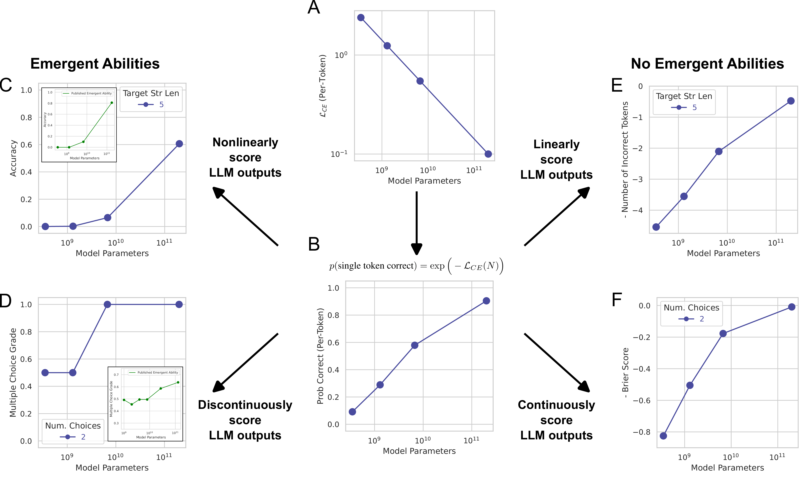

Austin ML Journal Club
About
Tips
Blogging
Reading List
Categories
All
(15)
news
(1)
paper
(14)
Gorilla: Large Language Model Connected with Massive APIs
paper
The power of LLMs, in a commercial setting, comes from its ability to use other tools and integrate business domain knowledge too. Unfotunately, it is still challenging getting the LLMs to work well when hooking up custom APIs that interface with custom processes and data. This paper is interesting, largely because it may be a step forward in getting the LLM to accurately use custom tooling.
Apr 18, 2024
Hongsup Shin
Dissecting Racial Bias in an Algorithm Used to Manage the Health of Populations
paper
Amidst the LLM hype, algorithmic bias in a critical domain such as healthcare is continued being overlooked. This algorithm-audit paper found racial bias in a widely used healthcare system and discussed the problem of using a wrong target variable. The paper is a few years old but the message is still relevant, and we discussed what’s happened since then.
Mar 28, 2024
Hongsup Shin

Are Emergent Abilities of Large Language Models a Mirage?
paper
Recent research observed that the largest models exhibit incredible increases in performance on a wide variety of tasks compared to smaller models. This paper argues that such so-called
emergence
is actually more reflective of the evaluation metric used. Switching to metrics that are known to scale smoothly with the per-token error reveals a much more predictable picture.
Feb 29, 2024
Brian King
Direct Preference Optimization: Your Language Model is Secretly a Reward Model
paper
This paper proposes a new technique to align LLMs with human preferences without using RL. This method is more robust and shows better performance over models trained with RLHF.
Jan 25, 2024
Kshitij Aggarwal
Why Do Tree-based Models Still Outperform Deep Learning on Typical Tabular Data?
paper
This paper compares the performance of deep learning techniques to traditional tree-based methods for a novel set of 45 tabular datasets. The inductive biases of tree-based versus neural network models was analyzed as a proposed method to guide development of improved tabular specific neural network models.
Oct 19, 2023
Kathrine Behrman
Neural Machine Translation by Jointly Learning to Align and Translate
paper
This paper marks an important step in the development of machine translation (MT). It came out just as Neural Machine Translation (NMT) was taking off, extending from Statistical Machine Translation (SMT), and as a milestone along the way to Transformer-based NMT. The authors introduce a novel attention mechanism applied to MT and show that it improves performance on long sentences, in particular, from prior recurrent neural network NMT approaches.
Sep 28, 2023
Meghann Agarwal, Hongsup Shin, Claude
Constitutional AI: Harmlessness from AI Feedback
paper
There is an arms race of large language models (LLMs) in industry where companies use different approaches and techniques. Anthropic claims to adopt a more cautious approach that minimizes harm by LLMs than others. Let’s look into
constitutional AI
, the core algorithm of their LLM, to understand how this harm mitigation works.
Aug 31, 2023
Hongsup Shin
AutoKnow: Self-Driving Knowledge Collection for Products of Thousands of Types
paper
In e-commerce, it is challenging to organize and categorize products that are described by merchants in various ways. Finding a unified language and taxonomy has always been an underlying effort with commerce. This paper uses various ML algorithms to address this challenge.
Jul 20, 2023
Saina Lajevardi, Hongsup Shin
Let’s Verify Step by Step
paper
This is an interesting new paper by OpenAI that discusses how we can apply the same principles we use to solve math problems to AI. The paper evaluates different approaches to solving a dataset comprising of math problems. With this approach, they trained the model to get the right answer and but also “think” through the problem to arrive at the right answer.
Jun 22, 2023
Akshata Mohan, Hongsup Shin
Visualization in Bayesian workflow
paper
This paper summarizes types of data visualization that we can use in Bayesian modeling and inference. It also provides a good overview of how to do Bayesian data analysis properly, including model validation such as prior and posterior predictive checks.
Mar 29, 2023
Hongsup Shin
Reviwing a Case Study About Real Estate Market Prediction
paper
The paper reviewed here attempts to predict outcomes about the real estate market with binary classification. Though the paper’s research design and results were lacking, it gave us a chance to have a discussion about practices for experimental design.
Feb 23, 2023
Athula Pudhiyidath
Leakage and the Reproducibility Crisis in ML-based Science
paper
Data leakage in a common problem in ML-based science leading to reproducibility failures and overly optimistic conclusions. We discussed 8 types of data leakage and the use of model info sheets to identify and reduce all leakage types.
Jan 26, 2023
Kate Behrman
Zero-Shot Text-to-Image Generation
paper
There is so much hype in generative AI. But how does it actually work? We discuss OpenAI’s DALL-E paper to understand model architecture but more importantly, whether their model validation is solid and reasonable.
Dec 15, 2022
Hongsup Shin
“Everyone wants to do the model work, not the data work”: Data Cascades in High-Stakes AI
paper
Garbage in, garbage out. It seems like a lot of people in the ML community still don’t understand this logic. We discuss poor data-handling practices and their critical ramifications.
Oct 27, 2022
Hongsup Shin
Why ML Journal Club
news
Welcome to our journal club! I talk about why I organized an in-person journal club with my fellow ML practitioner friends in Austin, TX.
Oct 17, 2022
Hongsup Shin
No matching items